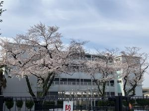
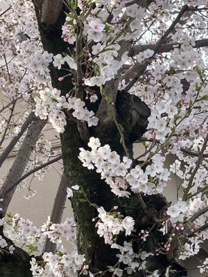
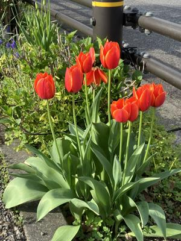
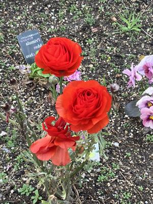

うるがいの話 ある日
最新: ただいま沖縄にいる【うるがいの話 ある日】とは 一日だけのプログです
『うるがいの話』の最新一日だけのプログで、通信料が少なく経済的だ。カニの画像をクリックすると全ての日付が載る『うるがいの話』サイトを表示します
|
|
【うるがいの話】 うるがい(ｳﾙｶﾞｲ urugai)とは、『もずくがに』の名前でとても大きくなります。 |
|---|---|
|
|
【カミマヤーの話】 猫のことを方言でマヤーといいます。カミマヤー（kamimayaa）とは、神の猫のことです。 |
|
【たながぁの音楽】 たながぁ（ﾀﾅｶﾞｰ tanagaa）とは手長えびのことで、何種類かあり大きいのは車 エビぐらいになります。 |

|
【ぶながぁの話】 ぶながぁ(ﾌﾞﾅｶﾞｰ bunagaa)とは、赤い髪の毛、赤い身体、そして身長は１ｍ２０ｃｍ ぐらい、川の蟹を食べているの目撃された。場所は沖縄県国頭郡大宜味村のと ある村僕の隣近所に住んでいる爺さんから、聞いた話です。 |
|
|
【ギーマの話】 ギーマ(giima)とは、山原の里山に咲くスズランに似た、 花を付けます。実は食べられます、 気が付くと口の周りが紫になっています。 |
2024年04月06日 (土）ただいま沖縄にいる
20:54

朝８時過ぎにホテルをでて、那覇空港に着いたのは１４時２０分、預けた荷
物をまつと、すでに１５時前になる。カバンが、雨で濡れていた！。最近は
ビニールで包まない。待ち合わせてした恩納村の職員に、リモート端末を渡
す、ついでに家の近くまで送ってもらういながら、仕事の話をした。全然ゆ
ったりとしていない。家に着いたのは、１６時。

小雨が降る中、ヨメと傘をさしてウォーキングを行う。

プログを確認すると、ホテルで作成した４月１日から４日が無くなっている
のに気づく。明日ナオスベ、疲れた！。内地の桜は満開だが、雨が降ってい
る沖縄がいいと改めて思う。

２０時４６分 ビットコインの総資産 ￥２９、８０２（↑４４）